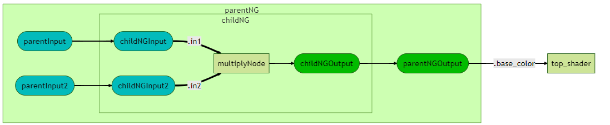
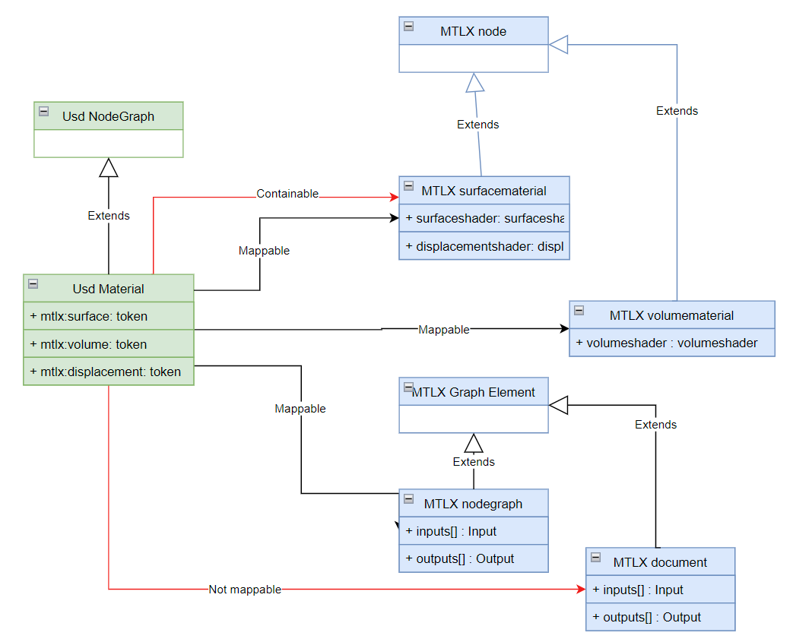
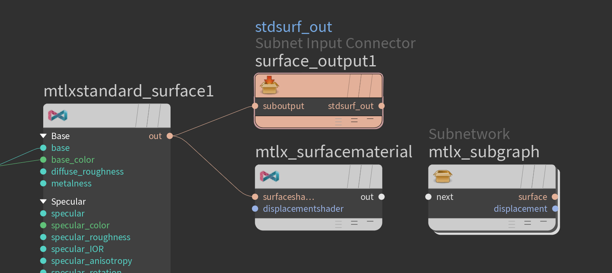
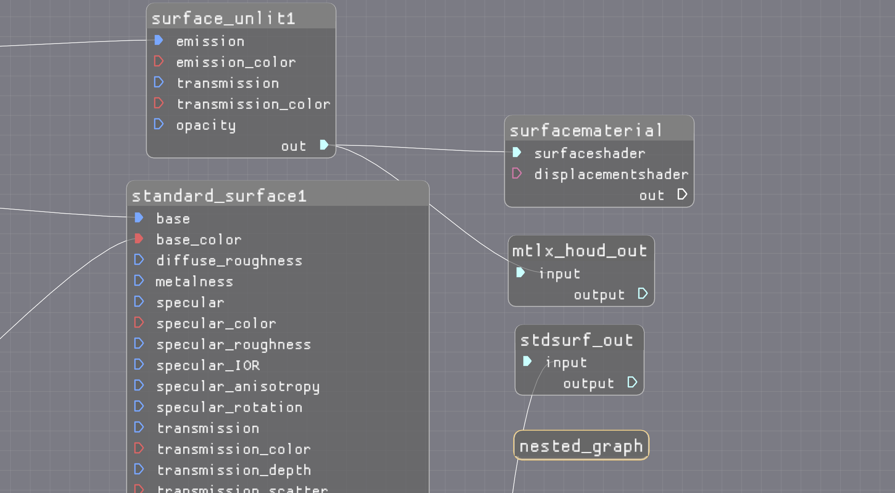

The Usd / MaterialX notebook
examines the
interoperability of material / shader graphs between Usd and MaterialX.
Observations are summarized below.
Currently Usd can support arbitrary nesting of graphs. The MaterialX specification also denotes this support but this has not been implemented at the time of writing.
Usd will "flatten" nested graphs to a single level, but this functionally does not seem to be exposed via a public API.
For example the following graphs nodegraph "childNG" has to be placed under the nodegraph "parentNG" to be supported in MaterialX. 
It is possible to "flatten" graphs within MaterialX, but no such utility / API is provided by default.
In Usd, for encapsulation, shader graphs are children of a Usd material with reuse via referencing. In MaterialX materials are not parents of the graphs they reference. No child hierarchy / grouping is enforced. (For more detailed information see the Materials section)
One proposal would be to support MaterialX node graph hierarchies. Related to this is how a "top" or document level graphs (which is not contained in a MaterialX nodegraph) behave. Basically MaterialX documents are "graph elements" as are MaterialX nodegraphs but are inconsistent from nodegraphs in that output ports are treated as AOVs and input ports are not allowed.
MaterialX has no concept of absolute vs relative path notation to specify port paths. (This differs from geometric dag paths used for material assignment)
This contrasts with Usd which simply uses absolute paths syntax for all connections (e.g. '/a/b/c') which are specified on input ports. The path references output ports which always exist.
A path API in Usd has no correspondance in MaterialX. A MaterialX FilePath can be used in
lieu of this, or
path modification can be done via string changes.
Note that MaterialX uses relative paths to form connections and does not allow for parent path syntax (such as "../"). This has the advantage of assuring that no connections are ever formed between ports which do not have the same parent. This rule appears for Usd as well, but it could be possible with absolute path usage to connect to arbitrary ports within the hierarchy.
Note that there is a connection edge construct but this is only available within upstream
traversal within an iterator.
Downstream traversal is available in MaterialX relies on a caching system which is always dirtied on arbitrary attribute changes and not just connection changes.
Usd represents a material as a node graph (container). This allows for arbitrary inputs and outputs to exist, with connections being made to child ports within the material.
MaterialX used to have a similar concept for materials but only
as a material "collection". As of version 1.38.6, material nodes were introduced
(surfacematerial and volumematerial)
which more closely matches existing DCC concepts such as "shading engines" in Maya.
If bidirectional interop between Usd and MaterialX is performed, the question arises as to how handle the mapping.
The following diagram shows the class hierarchy for Usd and MaterialX. It is mostly the discrepancy between have one as a graph and one as a pair of atomic nodes which allows for different approaches to mapping. 
Applications like Maya and Houdini have "graph containers" which more closely match a nodegraph.
Thus in Usd, these are output-to-output connections (as would occur in a MaterialX node-to-nodegraph) instead of input-to-output connections occurs with MaterialX node-to-node connections. The notebook shows the added logic complexity.
For the most parts Usd ports correspond 1:1 with MaterialX ports. At the time of writing MaterialX tokens do not correspond to Usd (tokens).
Some differences to note:
asset references vs MaterialX which has only file name references for image resources. At
the current time binary resource references are not supported in MaterialX.token to represent shader ports on materials.
This requires additional parsing of the port name to discover if the port maps to a surface,
displacement, or volume shader type in MaterialX. Usd supports nodes which are not defined in MaterialX. As such there is no way to map these to MaterialX unless "dummy" nodes are added.
If MaterialX and non-MaterialX graphs are under the same parent, if they do not reference by each other, it seems possible to extract MaterialX subgraphs out and merge them back in. (Note that this was not attempted in the notebook example)
Though MaterialX can support material assignments via it's look API, this was not examined
as the intent is to have Usd perform this role with the look interfaces being optional going
forward with the 1.39 release.
As part of the "Libraries / Definitions" notebook export was examined for Maya and Houdini. The both work within the context of integration with Usd.
Of note is that for Maya graphs MaterialX material nodes are currently disallowed but sub-graphs are
allowed, while Houdini material nodes are allowed but sub-graphs are both not exportable.

This could be cause some confusion as to how these map to MaterialX. (At time of writing Maya does not support MaterialX export so to be determined how each integration progresses). Additionally it will be interesting to see the approach taken by Blender for MaterialX export.
Currently only the MaterialX Graph Editor works without the notion of mapping to a Usd "container" (material graph). That said if MaterialX import is supported it is possible some graph configurations are not supported or required some type of transformation such as "flattening" or remapping.
These are still "early days" and will be interesting to see how this all works out.